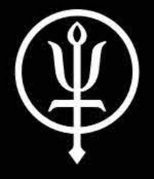
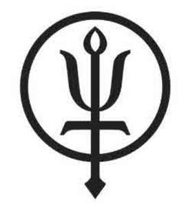

Trade Mark Journal No.2025/020 16 May 2025
UK00004185848 8 April 2025 (3,5,6,8,9,11,14,16,18,20,21,22,25,28,29,30,32,35,40,41,42,43)
Mark 1

Mark 2

- Class 3
- Beauty products; preparations for the care or beautification of the face, skin, hair, nails, eyebrows or eyelashes; soaps; body washes; shampoos; hair lotions; conditioners; hair colorants; hair waving preparations; hair care products; gels for use on the hair; hair lotions; perfumery; essential oils; cosmetics; toiletry products; make up preparations; artificial nails; nail care preparations; glitter in spray form for use as a cosmetic; false eyelashes; eyelash dye; eyelash care products; adhesives for affixing artificial eyelashes; adhesives for affixing false nails; shaving preparations; talcum powder; non-medicated preparations for use after shaving; dyes for the beard; beard softeners; hair bleaching preparations; sun cream; after-sun creams; sun-tanning preparations; moisturisers; anti-chafing creams and ointments; skincare preparations; hand care preparations; body care products [non-medicated]; oil for the body; lip balms(non-medicated-); deodorants and antiperspirants; dentifrices; mouthwashes; preparations for freshening the breath [not medicated]; toiletries; towels containing non-medicated toilet preparations; bath salts, not for medical purposes; foot and shoe sprays; waxes for leather; leather preservatives being polishes; bleaching preparations and other substances for laundry use; cleaning, polishing, scouring and abrasive preparations; insect repellent creams, sprays and lotions.
- Class 5
- Vitamin, mineral, dietary and nutritional supplements and preparations; prebiotic supplements; probiotic supplements; protein supplements; herbal supplements; vitamin and mineral waters; mineral water salts; dietetic and slimming aids; appetite suppressants; dietetic preparation; antioxidants; sugar substitutes for diabetics; milk proteins; protein powder; meal replacement bars and powders; electrolytes for medical use; herbal extracts; vitamin drinks; dietary supplement drinks; dietary supplement drink mixes; nutritional drink mixes for meal replacement; nutritional supplement shakes; beverages for use as a dietetic; herbal beverages; beverages containing probiotics or prebiotics for nutritional supplement use; sanitary preparations; first-aid kits; absorbent wadding; plasters; bandages; gauze bandages (dressings); bandaging tapes; antiseptics; sanitising wipes; sunburn ointments and preparations; after sun lotions and creams; disinfectants; antibacterial preparations; medicated bathing preparations; chemical compositions, preparations and reagents for medical purposes; medicinal preparations; medicinal oils; cold creams for sporting injury treatment; pharmaceutical preparations; insect repellents; insecticides; larvicides; fungicides, herbicides and pesticides; molluscicides and nematicides; preparations for destroying vermin; acaricides.
- Class 6
- Small items of metal hardware; metal badges; badges of metal for vehicles; ornaments; traps for wild animals; anchors; bicycle parking installations of metal; padlocks; nails and screws; metal ladders; tool boxes of metal; metal bells; metal climbing equipment; metal karabiners; crampons; hooks; ice nails; metal pegs; pitons of metal; snow irons; shoe spikes of metal for mountaineering; climbing irons; metal quickdraws for climbing; connectors of metal for mountain climbing; metal snap hooks; metal hardware; rope thimbles of metal; metal ropes; chains; tent pegs; pulleys; metal locking mechanisms; descenders of metal; metal clamps; metal containers for storage or transport; safes; keys; signs; statues; statuettes; figurines; bronzes; trophies; money boxes; boxes; models of precious metal; parts, fittings and components for all the aforesaid goods.
- Class 8
- Hand tools; cutlery and food preparation implements including forks, spoons, knives and penknives; tin openers; tent stake pullers; saws; saw blades; scissors; knife sharpeners; machetes; survival tools; shovels; household hammers; mallets; screw clamps; axes including ice axes, pickaxes and hatchets; mountaineering picks; leather sheaths for knives; gardening tools; hygienic and beauty implements including tweezers and emery boards; hair styling and waving apparatus; safety and rescue tools including side arms (excluding firearms); historical and defensive weaponry such as swords, sabres and harpoons; hand operated insecticide sprayers; wax for skis; scrapers; parts, fittings and components for all the aforesaid goods.
- Class 9
- Scientific and measuring instruments including navigation, directional, nautical, surveying, photographic, weighing, measuring, detecting, testing, inspecting; and life-saving devices; altimeters; compasses; GPS devices; radar and sonar fish finders; apparatus for measuring and/or recording time, speed, distance, acceleration, altitude, environmental temperature, humidity and purity; decorative magnets; electric locks; padlocks; protective and safety equipment; protective headgear for sports and outdoor activities; rock climbing helmets; head guards for sports; fall protection equipment for fail restraint and fall arrest including safety belts; nets and harnesses; life-saving apparatus including life jackets; personal protection devices including gloves and shoes for protection against accidents; reflective wear; safety protection equipment and devices; signalling devices such as bells and whistles; alarms; warning devices; protective clothing for use in sporting and outdoor pursuits activities; lanyards for safety purposes for fall protection; mouth guards for sports; communication and navigation devices including walkie-talkies; wearable activity trackers; optical apparatus including sunglasses; corrective and protective glasses; goggles; smart glasses; binoculars; magnifying glasses; visors; cases and retaining devices; cords; computer printer ribbons; chains and devices for retaining glasses, spectacles and sunglasses; diving and water sports equipment; diving suits; divers' masks; divers’ ear plugs; snorkels; wet suits; dry suits; gloves for divers; computing and mobile devices including laptops; smart watches; cordless telephones and smartphones; mobile phone accessories including battery chargers; solar panels; screen protectors; mobile telephone covers; mobile telephone cases; mobile telephone cases made of leather or imitations of leather; mobile telephone covers made of cloth or textile materials; audiovisual and electronic equipment; speakers, both wearable and portable; headphones; headsets; computer software; computer software downloadable from the Internet; computer software being information databases for collating information; databases; computer databases; mobile apps; media content; digital photo frames; electronic greetings messages and digital greetings messages; electronic greetings cards; digital greetings cards; magnetic encoded cards and cards bearing machine readable information; identity cards; smart cards; cards bearing magnetic data media; cameras; photographic films; MP3s; JPEGs; MPEGs CDs and DVDs; downloadable electronic publications; video and computer game programs; interactive computer game software; video game discs, cartridges and cassettes; digital music (downloadable) provided from Internet web sites; digital media players; digital versatile discs; audio cassette recorders and players; video cassette recorders and players; compact disc players; digital versatile disc recorders and players; digital audio tape recorders and players; electronic diaries; radios; mouse pads; eyeglasses; sunglasses and cases therefore; encoded magnetic cards; phone cards; credit cards; cash cards; debit cards and magnetic key cards; decorative magnets; global positioning systems; navigation apparatus for vehicles (on-board computers); electronic and downloadable vouchers and coupons; parts, fittings and components for all the aforesaid goods.
- Class 11
- Apparatus for lighting, heating and ventilation; head lamps; electric pocket torches; lights; gas lamps; LED lamps; solar powered lamps; rechargeable torches; miners' lamps (head torches); pocket searchlights; torches; flashlights; LED flashlights; diving lights; safety lamps; lamp reflectors; lamps for tents; germicidal lamps; glow sticks; stage smog maker; ultraviolet ray lamps ; gas burners; electric pressure cooking saucepans; immersion heaters; pocket warmers; radiators (electric); socks (electrically heated); hot water bottles; friction lighters for igniting gas; gas lighters; oil burners; apparatus for cooking including gas and electric cookers; cooking stoves; barbecues (including barbecue grills and lava rocks for use in barbecues); kilns; gas stoves; apparatus for refrigerating and drying including refrigerators; hair drying apparatus; water purification filters; water filtering apparatus; water sterilisers; hydrants; parts, fittings and components for all the aforesaid goods.
- Class 14
- Jewellery including imitation jewellery; bracelets; necklaces; rings; paste jewellery; olivine gems; jewellery of yellow amber; gold; gold thread; objects of imitation gold or imitation precious metals; ormolu wares; osmium; palladium; pearls; pearls made of amberoid; rhodium; platinum; ruthenium; silver thread; silver jewellery; spinel; spin silver; threads of precious metals or their alloys; watches of all types including chronographs; wrist watches sports watches and chronometers; ; chronometrical instruments; clocks including alarm clocks; clock and watch cases; clock and watch hands; clock and watch dials, glasses and crystals; watch chains; watch straps; gold and silverware; precious stones; diamonds; copper tokens; wires of precious metals or their alloys; works of art of precious metals or their alloys; boxes of precious metal including jewellery boxes and jewellery cases; goods made of or coated with precious metals including imitation gold; amulets; brooches; buckles; busts; cases; chains; charms; clips; coffee services; coins; containers; crowns; cuff links; earrings; headdress; key rings; medallions; medals; pins; tableware services; sun dials; tokens; tiaras; vessels; wire; badges; trophies and belt buckles; keyrings including key fobs made of leather incorporating key rings; lanyards; for keys; keyrings; key chains; parts, fittings and components for all the aforesaid goods.
- Class 16
- Printed matter and printed publications; manuals; books; magazines; periodicals; brochures; leaflets; calendars; printed agendas; event programs; newsletters; official programs; printed tickets; posters; souvenir programs; wall charts; advertising signs made of paper or cardboard; plastic sheets; films and bags for wrapping and packaging; shopping (carrier) bags of plastic; handkerchiefs of paper; stationery; writing and drawing implement; pens; pencils; pencil sharpeners; ink pens; inks for pens; highlighters; felt tip pens; marking pens; drawing boards; drawing instruments; erasers; pastels (crayons); stencils; rulers; paintbrushes; staplers; staples; adhesive tape dispensers; adhesives for stationery or household purposes; glue sticks; removable self-stick notes; notepads; block notepads; note books; diaries; desk note pads; document files; indexed books for the recordal of information relating to fitness training; cases for pens; cases for stationery; pencil cases; cheque book holders; bookbinding material; albums; catalogues; gift cards; gift vouchers; greeting cards; office requisites (except furniture); parts, fittings and components for all the aforesaid goods.
- Class 18
- Walking sticks; walking stick seats; mountaineering sticks; walking poles; luggage and baggage include trunks; suitcases; holdalls and garment bags for general travel needs; wash bags for toiletries; bags designed for campers, climbers, athletes, sports enthusiasts or hunters; daypacks; backpacks; rucksacks; satchels; haversacks; and knapsacks; bags for specific use including hand bags; duffle bags; tote bags; beach bags; valises; kit bags; cross-body bags; bum bags; belt bags; hip bags; belt pouches; pockets for holding a pocket or trapper knife; pouches; wallets; purses; slings and pouches for carrying babies and infants; hip belts and straps for use with backpacks and rucksacks; frames and harnesses for rucksacks; leather laces; leather belts; belts; straps; animal skins; hides; umbrellas; parasols; dog clothing; dog coats; dog collars; dog shoes; dog leashes; dog belly bands; dog waste bag dispensers adapted for use with leashes; purses; parts, fittings and components for all the aforesaid goods.
- Class 20
- Furniture; furniture for camping or motor homes including chairs; tables; stools; seats; settees; camp beds; camping furniture; garden furniture; furniture fittings (not of metal); bedding (except linen); mattresses including inflatable; air and foam mattresses for functions including camping (not for medical purposes); sleeping mats; roll mats; air beds; cushions; air cushions (not for medical purposes); air pillows (not for medical purposes); tent pegs (not of metal); non-metal tent poles; tent stakes (non-metal); tent rings (non-metal); stud buttons (fasteners) of plastic for tentage; mirrors; picture frames; cable or pipe clips of plastics; clothes hangers; coat hangers; curtain rings; decorations of plastic for foodstuffs; hampers (baskets); mannequins; parts, fittings and components for all the aforesaid goods.
- Class 21
- Water bottles including reusable plastic and aluminium water bottles; flasks including drinking flasks; insulating flasks; hip flasks and flasks for travellers; lunch bags; lunch boxes; mugs; cups; beakers; plates; bowls; drinking glasses; tankards; glasses; household or kitchen utensils and containers; domestic utensils; stove carrying cases and containers for storage purposes; combs; sponges; brushes; articles for cleaning purposes; steel wool; cooking utensils including cooking pots; pans; saucepans; crockery; dishes; coffee pots; hand implements for barbecue cooking; barbecue utensils; corkscrews; bottle openers; can openers; mess-tins; picnic baskets; toothbrush and soap holders; caddies and covers; glassware; porcelain; earthenware; and china; articles made of ceramics, glass, porcelain or earthenware not included in other classes; candlesticks; cups; flasks; goblets; household containers; household utensils; jugs; kitchen utensils; napkin holders; sacred vessels; saucers; tankards; toothpick holders; trays for household purposes; urns; vases; parts, fittings and components for all the aforesaid goods.
- Class 22
- Ropes and string including bungee cords; ropes for tents; lines and cords for hanging pictures; nets including fishing nets; animal feeding nets; trawl fishing nets; twine for nets; snares and netting for protection against birds and insects; tents including lightweight shelters; tents for mountaineering or camping; awnings for tents; ground sheets and fly sheets; tarpaulins; laundry bags; hammocks; rope ladders; waterproof coverings for camps; canopies; clothes-lines; padding; cushioning and stuffing materials; straps and belts for handling loads; cables and cable ties; car towing ropes; zip ties; covers for camouflage; wax cloth; unfitted coverings; bungie cords; parts, fittings and components for all the aforesaid goods.
- Class 25
- Clothing; men’s clothing; women’s clothing; under clothing; children’s clothing; sports clothing; swimwear; outdoor clothing; weatherproof and thermal clothing; leisurewear; sweaters; pullovers; jackets; blousons; anoraks; wind breakers; waterproof jackets; coats; trousers; jeans; skirts; dresses; blouses; track suits; shirts; polo shirts; t-shirts; shorts; headwear; caps; hats; socks; footwear; fittings of metal for shoes and boots; heelpieces for shoes and boots; non-slipping devices for shoes and boots belts; scarves; balaclavas; gloves; mittens; parts, fittings and components for all the aforesaid goods.
- Class 28
- Sporting articles and equipment; gymnastics and exercise equipment; gymnastic articles and apparatus; body-building apparatus; exercise equipment; fitness exercise machines; sporting articles adapted for use in specific sports or outdoor pursuits; pads and protectors for use in sporting activities including elbow guards, knee guards, wrist guards, shin pads, shin guards and hip guards; hand protectors; gloves for sporting purposes; stomach protectors; leg guards; toys; games and playthings including toy and miniature boats; kites; bicycles; sporting articles for use in football including apparatus; gloves; goals; training apparatus; goal nets; soccer ball goal nets; and goal posts; climbers' and mountaineering articles including harnesses; apparatus for outdoor pursuits and sporting activities including equestrian use, water sports and fishing; skis and ski accessories including; ski poles; ski bags; snowboards and snowboarding accessories including bindings, covers and bags; bobsleighs and sledges; skates including ice-skates; surfboards and surfing accessories including bags, fins, leashes and covers; waterskies; skateboards; bags specifically adapted for sporting articles including ski, snowboard and surfboard bags; sports bags shaped to contain specific apparatus used in athletics; balls and bats; baseball masks; dog toys namely dog chews; parts, fittings and components for all the aforesaid goods.
- Class 29
- Meat; fish; poultry and game; meat extracts; beef jerky; preserved, frozen, dried and cooked fruits and vegetables; jellies; jams; compotes; eggs; milk; cheese; butter; yoghurt and other milk products; oils and fats for food; potato crisps; fruit and nut-based snack bars; nuts and dried fruit.
- Class 30
- Cereal-based snack foods; high-protein cereal bars; cereal-based energy bars; snack bars containing a mixture of grains; oats; flour and other preparations made from cereals; rice snacks; protein snack bars; milk chocolate bars; coffee and tea beverages including coffee-based beverages containing milk; artificial coffee; coffee flavourings; cocoa beverages; beverages made from cereals; chocolate-based beverages including chocolate-based beverages with milk; drinks flavoured with chocolate; instant powder for making flavoured drinks; preparations for dietetic additives for sports persons; non-dairy whiteners for beverages; prepared meals.
- Class 32
- Alcohol free beverages; alcohol free wine; water, including mineral and aerated waters; drinking water; flavoured waters; nutritionally fortified water; beverages (non-alcoholic) including fruit and vegetable beverages; mixed fruit juices; vegetable juices; aloe juice beverages; energy and sports drinks containing or without caffeine; sports drinks containing electrolytes; isotonic beverages; energy and mineral replacement beverages; nutritional and fortified beverages made from powdered cereals, oats, seeds, peas rice, soy, quinoa or coconut; soy-based beverages; beverages containing vitamins; beverages for use as aids to slimming ; syrups; powders and concentrates; syrups and other preparations for making beverages; preparations for making non-alcoholic drinks; sorbets; powders and extracts for the preparation of beverages; concentrates used in the preparation of soft drinks; powders for the preparation of beverages; powders used in preparation of coconut water drinks; fruit-based beverages; soft drinks; beer and larger.
- Class 35
- Retail services, retail store services, mail order retail services and electronic shopping retail services connected with the sale of beauty products, preparations for the care or beautification of the face, skin, hair, nails, eyebrows or eyelashes, soaps, body washes, shampoos, hair lotions, conditioners, hair colorants, hair waving preparations, hair care products, gels for use on the hair, hair lotions, perfumery, essential oils, cosmetics, toiletry products, make up preparations, artificial nails, nail care preparations, glitter in spray form for use as a cosmetic, false eyelashes, eyelash dye, eyelash care products, adhesives for affixing artificial eyelashes, adhesives for affixing false nails, shaving preparations, talcum powder, non-medicated preparations for use after shaving, dyes for the beard, beard softeners, hair bleaching preparations, sun cream, after-sun creams, sun-tanning preparations, moisturisers, anti-chafing creams and ointments, skincare preparations, hand care preparations, body care products [non-medicated], oil for the body, lip balms(non-medicated), deodorants and antiperspirants, dentifrices, mouthwashes, preparations for freshening the breath [not medicated], toiletries, towels containing non-medicated toilet preparations, bath salts, not for medical purposes, foot and shoe sprays, waxes for leather, leather preservatives being polishes, bleaching preparations and other substances for laundry use, cleaning, polishing, scouring and abrasive preparations, insect repellent creams, sprays and lotions, vitamin, mineral, dietary and nutritional supplements and preparations, prebiotic supplements, probiotic supplements, protein supplements, herbal supplements, vitamin and mineral waters, mineral water salts, dietetic and slimming aids, appetite suppressants, dietetic preparation, antioxidants, sugar substitutes for diabetics, milk proteins, protein powder, meal replacement bars and powders, electrolytes for medical use, herbal extracts, vitamin drinks, dietary supplement drinks, dietary supplement drink mixes, nutritional drink mixes for meal replacement, nutritional supplement shakes, beverages for use as a dietetic, herbal beverages, beverages containing probiotics or prebiotics for nutritional supplement use, sanitary preparations, first-aid kits, absorbent wadding, plasters, bandages, gauze bandages (dressings), bandaging tapes, antiseptics, sanitising wipes, sunburn ointments and preparations, after sun lotions and creams, disinfectants, antibacterial preparations, medicated bathing preparations, chemical compositions, preparations and reagents for medical purposes, medicinal preparations, medicinal oils, cold creams for sporting injury treatment, pharmaceutical preparations, insect repellents, insecticides, larvicides, fungicides, herbicides and pesticides, molluscicides and nematicides, preparations for destroying vermin, acaricides, small items of metal hardware, metal badges, badges of metal for vehicles, ornaments, traps for wild animals, anchors, bicycle parking installations of metal, padlocks, nails and screws, metal ladders, tool boxes of metal, metal bells, metal climbing equipment, metal karabiners, crampons, hooks, ice nails, metal pegs, pitons of metal, snow irons, shoe spikes of metal for mountaineering, climbing irons, metal quickdraws for climbing, connectors of metal for mountain climbing, metal snap hooks, metal hardware, rope thimbles of metal, metal ropes, chains, tent pegs, pulleys, metal locking mechanisms, descenders of metal, metal clamps, metal containers for storage or transport, safes, keys, keyrings, key chains, signs, statues, statuettes, figurines, bronzes, trophies, money boxes, boxes, models of precious metal, hand tools, cutlery and food preparation implements including forks, spoons, knives and penknives, tin openers, tent stake pullers, saws, saw blades, scissors, knife sharpeners, machetes, survival tools, shovels, household hammers, mallets, screw clamps, axes including ice axes, pickaxes and hatchets, mountaineering picks, leather sheaths for knives, gardening tools, hygienic and beauty implements including tweezers and emery boards, hair styling and waving apparatus, safety and rescue tools including side arms (excluding firearms), historical and defensive weaponry such as swords, sabres, and harpoons, hand operated insecticide sprayers, scientific and measuring instruments including navigation, directional, nautical, surveying, photographic, weighing, measuring, detecting, testing, inspecting, and life-saving devices, altimeters, compasses, GPS devices, radar and sonar fish finders, apparatus for measuring and/or recording time, speed, distance, acceleration, altitude, environmental temperature, humidity and purity, decorative magnets, electric locks, padlocks, protective and safety equipment, protective headgear for sports and outdoor activities, rock climbing helmets, head guards for sports, fall protection equipment for fail restraint and fall arrest including safety belts, nets and harnesses, life-saving apparatus including life jackets, personal protection devices including gloves and shoes for protection against accidents, reflective wear, safety protection equipment and devices, signalling devices such as bells and whistles, alarms, warning devices, protective clothing for use in sporting and outdoor pursuits activities, lanyards for safety purposes for fall protection, mouth guards for sports, communication and navigation devices including walkie-talkies, wearable activity trackers, optical apparatus including sunglasses, corrective and protective glasses, goggles, smart glasses, binoculars, magnifying glasses, visors, cases and retaining devices, cords, ribbons, chains and devices for retaining glasses, spectacles and sunglasses, diving and water sports equipment, diving suits, divers' masks, divers’ ear plugs, snorkels, wet suits, dry suits, gloves for divers, computing and mobile devices including laptops, smart watches, cordless telephones and smartphones, mobile phone accessories including battery chargers, solar panels, screen protectors, mobile telephone covers, mobile telephone cases, mobile telephone cases made of leather or imitations of leather, mobile telephone covers made of cloth or textile materials, audiovisual and electronic equipment, speakers, both wearable and portable, headphones, headsets, computer software, computer software downloadable from the Internet, computer software being information databases for collating information, databases, computer databases, mobile apps, media content, digital photo frames, electronic greetings messages and digital greetings messages, electronic greetings cards, digital greetings cards, magnetic encoded cards and cards bearing machine readable information, identity cards, smart cards, cards bearing magnetic data media, cameras, photographic films, MP3s, JPEGs, MPEGs CDs and DVDs, downloadable electronic publications, video and computer game programs, interactive computer game software, video game discs, cartridges and cassettes, digital music (downloadable) provided from Internet web sites, digital media players, digital versatile discs, audio cassette recorders and players, video cassette recorders and players, compact disc players, digital versatile disc recorders and players, digital audio tape recorders and players, electronic diaries, radios, mouse pads, eyeglasses, sunglasses and cases therefore, encoded magnetic cards, phone cards, credit cards, cash cards, debit cards and magnetic key cards, decorative magnets, global positioning systems, navigation apparatus for vehicles (on-board computers), electronic and downloadable vouchers and coupons, apparatus for lighting, heating and ventilation, head lamps, electric pocket torches, lights, gas lamps, LED lamps, solar powered lamps, rechargeable torches, miners' lamps (head torches), pocket searchlights, torches, flashlights, LED flashlights, diving lights, safety lamps, lamp reflectors, lamps for tents, germicidal lamps, glow sticks, stage smog maker, ultraviolet ray lamps , gas burners, electric pressure cooking saucepans, immersion heaters, pocket warmers, radiators (electric), socks (electrically heated), hot water bottles, friction lighters for igniting gas, gas lighters, oil burners, apparatus for cooking including gas and electric cookers, cooking stoves, barbecues (including barbecue grills and lava rocks for use in barbecues), kilns, gas stoves, apparatus for refrigerating and drying including refrigerators, hair drying apparatus, water purification filters, water filtering apparatus, water sterilisers, hydrants, jewellery including imitation jewellery, bracelets, necklaces, rings, paste jewellery, olivine gems, jewellery of yellow amber, gold, gold thread, objects of imitation gold or imitation precious metals, ormolu wares, osmium, palladium, pearls, pearls made of amberoid, rhodium, platinum, ruthenium, silver thread, silver jewellery, spinel, spin silver, threads of precious metals or their alloys, watches of all types including chronographs, wrist watches sports watches, and chronometers, , chronometrical instruments, clocks including alarm clocks, clock and watch cases, clock and watch hands, clock and watch dials, glasses and crystals, watch chains, watch straps, gold and silverware, precious stones, diamonds, copper tokens, wires of precious metals or their alloys, works of art of precious metals or their alloys, boxes of precious metal including jewellery boxes and jewellery cases, goods made of or coated with precious metals including imitation gold, amulets, brooches, buckles, busts, candlesticks, cases, chains, charms, cigar boxes, clips, coffee services, coins, containers, crowns, cuff links, cups, earrings, flasks, goblets, headdress, household containers, household utensils, jugs, key rings, kitchen utensils, matchboxes, medallions, medals, napkin holders, pins, purses, sacred vessels, saucers, tableware services, snuff boxes, sun dials, tankards, tobacco jars, tokens, toothpick holders, trays for household purposes, tiaras, urns, vases, vessels, wire, badges, trophies and belt buckles, keyrings including key fobs made of leather incorporating key rings, lanyards, for keys, printed matter and printed publications, manuals, books, magazines, periodicals, brochures, leaflets, calendars, printed agendas, event programs, newsletters, official programs, printed tickets, posters, souvenir programs, wall charts, goods made of paper and cardboard, plastic sheets, films and bags for wrapping and packaging, shopping (carrier) bags of plastic, handkerchiefs of paper, stationery, writing and drawing implement, pens, pencils, pencil sharpeners, ink pens, inks for pens, highlighters, felt tip pens, marking pens, drawing boards, drawing instruments, erasers, pastels (crayons), stencils, rulers, paintbrushes, staplers, staples, adhesive tape dispensers, adhesives for stationery or household purposes, glue sticks, removable self-stick notes, notepads, block notepads, note books, diaries, desk note pads, document files, indexed books for the recordal of information relating to fitness training, cases for pens, cases for stationery, pencil cases, cheque book holders, bookbinding material, albums, catalogues, gift cards, gift vouchers, greeting cards, office requisites (except furniture),walking sticks, walking stick seats, mountaineering sticks, walking poles, luggage and baggage include trunks, suitcases, holdalls and garment bags for general travel needs, wash bags for toiletries, bags designed for campers, climbers, athletes, sports enthusiasts or hunters, daypacks, backpacks, rucksacks, satchels, haversacks, and knapsacks, bags for specific use including hand bags, duffle bags, tote bags, beach bags, valises, kit bags, cross-body bags, bum bags, belt bags, hip bags, belt pouches, pockets for holding a pocket or trapper knife, pouches, wallets, purses, slings and pouches for carrying babies and infants, panniers for use with bicycles, hip belts and straps for use with backpacks and rucksacks, frames and harnesses for rucksacks, leather laces, leather belts, belts, straps, leather and imitations of leather, and goods made of these materials (not included in other classes), articles made of leather or imitation leather, animal skins, hides, umbrellas, parasols, dog clothing, dog coats, dog collars, dog shoes, dog leashes, dog belly bands, dog chews, dog waste bag dispensers adapted for use with leashes, furniture, furniture for camping or motor homes including chairs, tables, stools, seats, settees, camp beds, camping furniture, garden furniture, furniture fittings (not of metal), bedding (except linen), mattresses including inflatable, air and foam mattresses for functions including camping (not for medical purposes), sleeping mats, roll mats, air beds, sleeping bags, cushions, air cushions (not for medical purposes), air pillows (not for medical purposes), tent pegs (not of metal), non-metal tent poles, tent stakes (non-metal), tent rings (non-metal), stud buttons (fasteners) of plastic for tentage, mirrors, picture frames, cable or pipe clips of plastics, clothes hangers, coat hangers, curtain rings, decorations of plastic for foodstuffs, hampers (baskets), mannequins, water bottles including reusable plastic and aluminium water bottles, flasks including drinking flasks, insulating flasks, hip flasks and flasks for travellers, lunch bags, lunch boxes, mugs, cups, beakers, plates, bowls, drinking glasses, tankards, glasses, household or kitchen utensils and containers, domestic utensils, stove carrying cases and containers for storage purposes, combs, sponges, brushes, articles for cleaning purposes, steel wool, cooking utensils including cooking pots, pans, saucepans, crockery, dishes, coffee pots, hand implements for barbecue cooking, barbecue utensils, corkscrews, bottle openers, can openers, mess-tins, picnic baskets, matchboxes, toothbrush and soap holders, caddies and covers, glassware, porcelain, earthenware, and china, articles made of ceramics, glass, porcelain or earthenware not included in other classes, ropes and string including bungee cords, ropes for tents, lines and cords for hanging pictures, nets including fishing nets, animal feeding nets, trawl fishing nets, twine for nets, snares and netting for protection against birds and insects, tents including lightweight shelters, tents for mountaineering or camping, awnings for tents, ground sheets and fly sheets, tarpaulins, laundry bags, hammocks, rope ladders, waterproof coverings for camps, canopies, clothes-lines, padding, cushioning and stuffing materials, straps and belts for handling loads, cables and cable ties, car towing ropes, zip ties, covers for camouflage, wax cloth, unfitted coverings, clothing, men’s clothing, women’s clothing, under clothing, children’s clothing, sports clothing, swimwear, outdoor clothing, weatherproof and thermal clothing, leisurewear, sweaters, pullovers, jackets, blousons, anoraks, wind breakers, waterproof jackets, coats, trousers, jeans, skirts, dresses, blouses, track suits, shirts, polo shirts, t-shirts, shorts, headwear, caps, hats, socks, footwear, fittings of metal for shoes and boots, heelpieces for shoes and boots, non-slipping devices for shoes and boots belts, scarves, balaclavas, gloves, mittens, sporting articles and equipment, gymnastics and exercise equipment, gymnastic articles and apparatus, body-building apparatus, exercise equipment, fitness exercise machines, sporting articles adapted for use in specific sports or outdoor pursuits, pads and protectors for use in sporting activities including elbow guards, knee guards, wrist guards, shin pads, shin guards and hip guards, hand protectors, gloves for sporting purposes, stomach protectors, leg guards, toys, games, and playthings including toy and miniature boats, kites, bicycles, sporting articles for use in football including apparatus, gloves, goals, training apparatus, goal nets, soccer ball goal nets, and goal posts, climbers' and mountaineering articles including harnesses, apparatus for outdoor pursuits and sporting activities including equestrian use, water sports and fishing, skis and ski accessories including, ski poles, wax for skis, ski bags, scrapers, snowboards and snowboarding accessories including bindings, covers and bags, bobsleighs and sledges, skates including ice-skates, surfboards and surfing accessories including bags, fins, leashes and covers, waterskies, skateboards, bags specifically adapted for sporting articles including ski, snowboard and surfboard bags, sports bags shaped to contain specific apparatus used in athletics, bungie cords, balls and bats, baseball masks, meat, fish, poultry and game, meat extracts, beef jerky, preserved, frozen, dried and cooked fruits and vegetables, jellies, jams, compotes, eggs, milk, cheese, butter, yoghurt and other milk products, oils and fats for food, potato crisps, fruit and nut-based snack bars, cereal-based snack foods, high-protein cereal bars, cereal-based energy bars, snack bars containing a mixture of grains, nuts, and dried fruit, oats, flour and other preparations made from cereals, rice snacks, protein snack bars, milk chocolate bars, coffee and tea beverages including coffee-based beverages containing milk, artificial coffee, coffee flavourings, cocoa beverages, beverages made from cereals, chocolate-based beverages, including chocolate-based beverages with milk, drinks flavoured with chocolate, instant powder for making flavoured drinks, preparations for dietetic additives for sports persons, non-dairy whiteners for beverages, prepared meals, alcohol free beverages, alcohol free wine, water, including mineral and aerated waters, drinking water, flavoured waters, nutritionally fortified water, beverages (non-alcoholic) including fruit and vegetable beverages, mixed fruit juices, vegetable juices, aloe juice beverages, energy and sports drinks containing or without caffeine, sports drinks containing electrolytes, isotonic beverages, energy and mineral replacement beverages, nutritional and fortified beverages made from powdered cereals, oats, seeds, peas, rice, soy, quinoa, coconut, soy-based beverages, beverages containing vitamins, beverages for use as aids to slimming , syrups, powders and concentrates, syrups and other preparations for making beverages, preparations for making non-alcoholic drinks, sorbets, powders and extracts for the preparation of beverages, concentrates used in the preparation of soft drinks, powders for the preparation of beverages, powders used in preparation of coconut water drinks, fruit-based beverages, soft drinks, beer, larger; business promotion services; inventory management including stock control; business data analysis; administrative processing services; business administration services; provision of information and advice on the supplying and promoting of commodities and selection and display of goods; provision of information and advice to prospective purchasers of commodities and goods; advertising goods and services; auditing and administration services; promotion and publicity services; business management services; business research services; business consultancy services; business information services; business policy review, development and implementation services; business problem identification, analysis and resolution services; business priority identification and analysis; business reporting services; market research services; marketing services; compilation of information into computer databases; database management services; writing of publicity texts; operation and supervision of loyalty schemes and incentive schemes; advisory, consultancy and information services relating to all the aforesaid.
- Class 40
- Water purification; air purification; regeneration of air; treatment of materials; transformation of agricultural products including wine-making; distillation; slaughtering; fruit crushing; flour milling; sawing; embroidery; sewing; cutting; polishing; metal coating; dyeing of fabric or clothing; treatment of fabrics (against mites and moths); fabric waterproofing; tin-plating; recycling of waste and trash; energy production services; rental of equipment for energy production; custom manufacture and assembly services; rental of equipment for custom manufacturing; transformation of materials; food and drink preservation; advisory, consultancy and information services relating to all the aforesaid.
- Class 41
- Education; entertainment; instruction and training services; organisation of and conducting conferences, lectures, demonstrations, seminars, displays, presentations, workshops and exhibitions; competitions and events; online and electronic entertainment events; parties; functions and exhibitions; fitness and sporting services and training; providing sports club services; health club services; coaching services; outdoor pursuits and camping services; holiday camp services; providing training and teaching programs in the fields of climbing and work at height; provision of leisure and recreational facilities; sports facilities; rental of tennis courts; rental of skin diving equipment; rental of sports equipment; hospitality services; booking and reservation services for entertainment, recreational, leisure and sporting activities and events; provision of non-downloadable multimedia content; correspondence courses; physical education; practical training; publication of books; publication of electronic books and journals online; publication of texts; advisory, consultancy and information services relating to all the aforesaid.
- Class 42
- Science and technology services; scientific assessments and research in physiological and psychological fields; quality evaluation for others in the field of safety equipment; comparative analysis studies of the performance of software applications; provision of websites; research and development services; design and development of computer hardware and software; rental of computer software; software as a service (SaaS); organisation, installation and maintenance of computer software; services for gathering, processing, analysing, managing and reporting information concerning online, internet; and website activity; designing, drawing, creating and maintaining web pages; design and development of computer application software; development of multimedia websites; provision of an Internet platform for social networking services; providing technical support for computer hardware and software; image scanning services; quality control and authentication services; design services; advisory, consultancy and information services relating to all the aforesaid.
- Class 43
- Cafes; café services; coffee shops; snack bars; cafeterias; self-service restaurants; restaurant services; public houses; bars; clubs; drinking house facilities; catering services including catering for events and provision of food and drink; accommodation services including camp services; day nurseries; crèche services; child care centres; organising and providing facilities for conferences and exhibitions; provision of event and meeting facilities; rental of furniture, linen, table settings and equipment for the provision of food and drink; advisory, consultancy and information services relating to all the aforesaid.
Thrudark Limited
Representative: Brandsmiths SL Limited